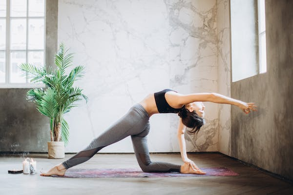
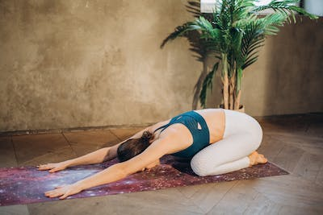
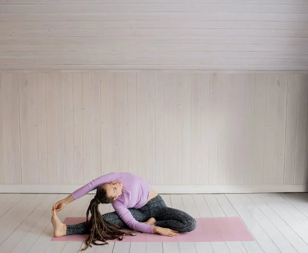
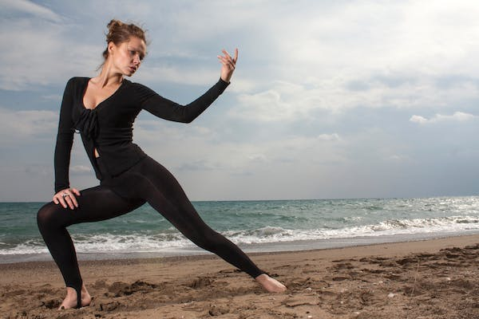

Also known as "The mother of yoga poses" it looks easy. This two-footed stance is the foundation for many other positions that require awareness and balance. It is through this pose that one finds the proper alignment and shape for additional movements
How to Do It:
Consider this exercise your reset moment. Simple in design, this easy pose relaxes your nervous system and is a great place to take a breather during class if you need one. Got knee problems? Make sure to lower into this position with extra care.
How to Do It:
Cat/cow is a great way to warm up your back, explains Ingber, and get your body ready for downward-facing dog. It also helps address mobility (hello, desk jobs) and work your core without the extra stress on your wrists and shoulders that you might feel in a down dog move.
How to Do It:
Lying around may seem pointless, but this is one of the most meditative moments in any yoga practice. Corpse pose calms the mind, relieves stress and induces a relaxed state. (Why do you think yogis are so chill?)
How to Do It:
The first in the Warrior series, this pose strengthens your legs and opens your hips and chest, while also stretching your arms and legs. While holding this exercise, you’ll see an increase in your concentration and balance — both essential qualities to carry through a yoga practice.
How to Do It:
Similar to Warrior I, Warrior II offers just a slight variation, with your upper body rotated to the side instead of facing forward. You’ll still reap the same quad-strengthening benefits of Warrior I, but you’ll also open up your hip flexor muscles for greater flexibility.
How to Do It:
One of the most recognizable poses of the bunch, down dog is a great way to stretch your back, shoulders, arms, hamstrings and well, just about everything. And it gets you calm and centered, too.
How to Do It:


The wall push-up is an effective variation on the military-esque traditional push-up — which is an advanced movement. Similar in execution to the standard push-up, the wall push-up involves shifting your hands from the floor to — you guessed it! — the wall. “By elevating your hand, you decrease the amount of gravity pressing down against you, which makes the movement easier,” says Luciani.
How to Do It:
There are various variation of normal if you're a beginner you can start with wall push-ups or knee push-ups, male and female can do normal push-ups and advance push ups.
Known as the Superman before the ~gender revolution~, the superhuman is a super-duper pulling exercise. It’s i-n-c-r-e-d-i-b-l-y important to do some pulling exercises in your workout routine. Most of our day-to-day to-dos, like camping out on the computer and lounging on the lounger, neglect our pulling muscles (back, forearms, traps), which increases the risk of muscle imbalances and, eventually, injury.
How to Do It:
For more of a challenge, try adding some motion with your arms. Keeping your chest lifted, shoot your elbows straight back and squeeze your lats together to form a W with your arms and head” says Luciani. Hold here for 2 seconds before extending your arms. Then repeat.
This bodyweight move is (almost) as much fun as it sounds. This is one creepy-crawly exercise that will have you feeling like a little kid again while building your triceps, shoulders, chest, abs, glutes, and quads.
How to Do It:
Mastered the reverse lunge? Congrats! Time to advance to the split squat, the reverse lunge’s feistier cousin. Split squats work the same muscles as lunges (quads, glutes, calves, core, hamstrings). But because split squats require getting into a lunge position and moving within that position (unlike reverse lunges, which involve dynamically moving into and out of the position), they work the muscles to a greater range of motion. There are a few variations of the split squat, we recommends starting with the equipment-free bodyweight version.
How to Do It:
Squats are popular with weightlifters, which can lead to the misperception that they can be done only with weights. But even squatting with your bodyweight alone can give you strong leg muscles if you do it with good form.
How to Do It:
Quick: Picture a banana on a table. Got it? Great — you’ve basically got the gist of the hollow hold.
But don’t let the fruit reference fool you. This movement gets spicy QUICK. It’s super good for strengthening your midsection.
Because you’re holding your muscles in a contracted position, there’s greater time under tension, which leads to greater muscle gains.
How to Do It:
Do you want to put your abdominal strength to the test? The curl-up abdominal test is a great way to assess abdominal strength and endurance, and it requires little to no equipment.
This can also be done by anyone of any fitness level. So, if you want to try the test, this guide will explain what you need to know, specifically how to do a curl up with optimal form.
How to Do It: Here is a simple step-by-step guide for how to do the abdominal curl-up test. The curl-up test is not a timed test, but a test that involves performing repetitions in time with a metronome until muscular failure.

If you want to elevate your jogging, it’s important to take a look at your jogging form and make any necessary adjustments and improvements. This will help reduce chance of injury, increase speed, and boost efficiency.
How to Do It:
High Knees are a cardio-intensive exercise performed at a fast pace. It engages your core, strengthens all the muscles in your legs, gets your heart rate up and improves momentum, coordination and flexibility. Because of the many physical benefits, high-knees are incorporated into a wide variety of workouts. They’re also relatively easy exercises to perform because they can be practiced anywhere — no gym or equipment required.
How to Do It:
Also known as Running planks. Climbing a mountain would be a daunting workout to most, but what if the mountain is the floor? That's the concept behind mountain climbers. Performed from a plank position, you'll alternate bringing one knee to your chest, then back out again, speeding up each time until you're "running" against the floor.
How to Do It:
Jumping jacks are a great full body exercise that enhances aerobic fitness, strengthens the body, and promotes relaxation. This exercise also improves muscle endurance, increases the body’s metabolic rate, and helps with weight loss.
How to Do It:

Zumba is beneficial for heart health, improves coordination, tones your entire body, and may help relieve stress. If you like to dance, Zumba is a fun choice for an aerobic workout. After warming up, your Zumba video will instruct you through easy-to-follow dance moves set to upbeat music. You’ll finish with a cool down and stretch.
How to Do It:
Riding a stationary exercise bike is an efficient and effective way to burn calories and body fat while strengthening your heart, lungs, and muscles.
Compared to some other types of cardio equipment, a stationary bicycle puts less stress on your joints, but it still provides an excellent aerobic workout.
With indoor cycling, you don’t have to be concerned about traffic, road conditions, or the elements. You can work out safely at a comfortable temperature any time of the year.
How to Do It:
Walking may be the simplest way to work out. You can do it almost anywhere, and it’s a snap to get started: Just put one foot in front of the other. There are many great reasons to walk. Your heart will get stronger, you’ll lower your blood pressure, and your bones will get stronger. Walking also eases stress, helps you sleep better, and can boost your outlook on life.
How to Do It:
Walking is an ideal type of exercise when you're just getting started. You can go as fast or as slow as you need. It’s easy to bump up your pace and go longer distances as you get better.